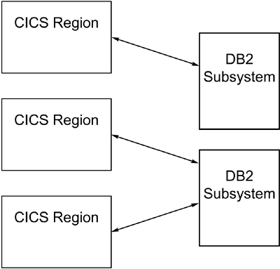
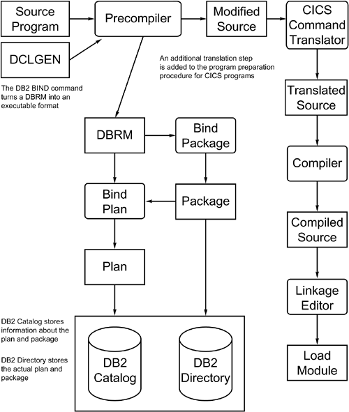
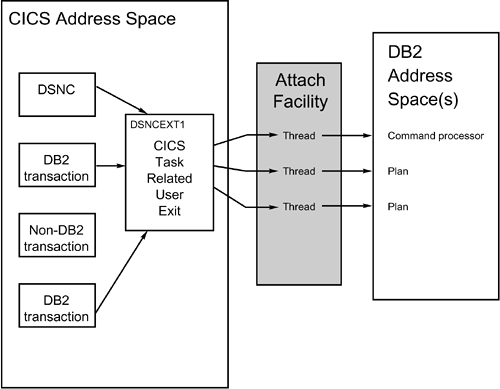
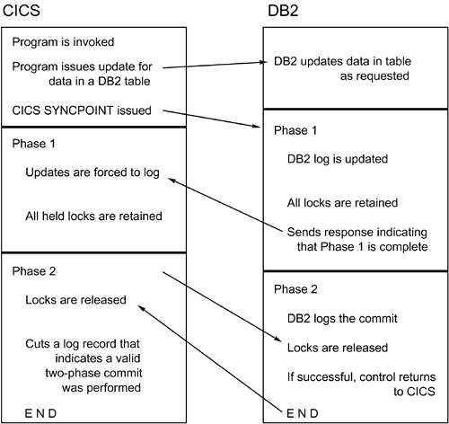

|
|
< Day Day Up > |
|
CICS (Customer Information Control System)The second of the four "doors to DB2" is CICS (Customer Information Control System). CICS is a teleprocessing monitor that enables programmers to develop online, transaction-based programs. By means of BMS (Basic Mapping Support) and the data communications facilities of CICS, programs can display formatted data on screens and receive formatted data from users for further processing. A typical scenario for the execution of a CICS transaction follows:
When DB2 data is accessed using CICS, multiple threads can be active simultaneously, giving multiple users concurrent access to a DB2 subsystem of a single CICS region. Contrast this functionality with the TSO environment, in which only one thread can be active for any given TSO address space. A mechanism named the CICS Attach Facility connects CICS with DB2. Using the CICS Attach Facility, you can connect each CICS region to only one DB2 subsystem at a time. You can connect each DB2 subsystem, however, to more than one CICS region at one time, as you can see in Figure 18.22. Figure 18.22. CICS region to DB2 subsystem relationship. DB2 provides services to CICS via MVS TCBs. All of these TCBs reside in the CICS address space and perform cross-memory instructions to execute the SQL code in the DB2 database services address space (DSNDBM1). Before you delve too deeply into the specifics of the CICS Attach Facility, you should explore the basics of CICS further. CICS Terminology and OperationTo fully understand the manner in which CICS controls the execution of an application program, you must first understand the relationships among tasks, transactions, and programs. These three terms define separate entities that function together, under the control of CICS, to create an online processing environment. A task is simply a unit of work scheduled by the operating system. CICS, a batch job, DB2, and TSO are examples of tasks. CICS, however, can schedule tasks under its control, much like the way an operating system schedules tasks. A CICS task, therefore, is a unit of work, composed of one or more programs, scheduled by CICS. The purpose of a transaction is to initiate a task. A transaction is initiated by a 1- to 4-byte identifier that is defined to CICS through a control table. Generally, a one-to-one correspondence exists between CICS transactions and CICS tasks, but one transaction can initiate more than one task. Finally, a program is an organized set of instructions that accomplishes an objective in a given unit of work. A CICS program can perform one or many CICS tasks. CICS TablesOlder versions of CICS use tables, maintained by a systems programmer, to administer its online environment. These tables control the availability of CICS resources and direct CICS to operate in specific ways. Based on the values registered in these tables, CICS can be customized for each user site. The major tables that affect CICS-DB2 application programs are outlined in the subsections that follow. PPT (Processing Program Table)CICS programs and BMS maps must be registered in the PPT (Processing Program Table). If the program or map has not been recorded in the PPT, CICS cannot execute the program or use the map. This is true for all CICS programs, including those with embedded SQL. For programs, the name recorded in the PPT must be the name of the program load module as it appears in the load library. PCT (Program Control Table)The PCT (Program Control Table) is used to register CICS transactions. CICS reads this table to identify and initialize transactions. Therefore, all transactions must be registered in the PCT before they can be initiated in CICS. FCT (File Control Table)Every file that will be read from or written to using CICS operations must be registered in the FCT (File Control Table). This requirement does not apply to DB2 tables, however. The underlying VSAM data sets for DB2 table spaces and indexes do not need to be registered in the FCT before CICS-DB2 programs read from them. DB2 data access is accomplished through SQL, and the DB2 subsystem performs the I/O necessary to access the data in DB2 data sets. A CICS-DB2 program that reads any file using conventional methods (that is, non-SQL), however, must ensure that the file has been registered in the FCT before accessing its data. RCT (Resource Control Table)When a DB2 program will be run under CICS, an additional table called the RCT (Resource Control Table) is used to control the interface. The RCT applies only to CICS transactions that access DB2 data; it defines the manner in which DB2 resources will be used by CICS transactions. In particular, the RCT defines a plan for each transaction that can access DB2. Additionally, it defines parameters detailing the number and type of threads available for application plans and the DB2 command processor. Other TablesOther tables used by CICS control resource security, terminal definitions, logging and journaling, and the automatic invocation of program at CICS startup. A discussion of these tables is beyond the scope of this book. RDO (Resource Definition Online)As of CICS V4, the manner in which the interface between CICS and a DB2 subsystem is defined began to change. Instead of populating tables and updating the configuration using macros, a new method of changing parameters online is available. This new method is known as Resource Definition Online, or RDO. Whether you use the RCT or the RDO depends on the version of CICS that you are using:
NOTE Most shops using CICS will have already converted to using the RDO, or will need to convert soon. The most current release of CICS (circa early 2004) is CICS Transaction Server for z/OS V2.3. The RDO is simply a new mechanism for defining the interface. It offers several benefits and it is relatively easy to migrate from using the RCT to using RDO. IBM provides a utility named DFHCSDUP that can be used to migrate RCT parameters to RDO names. The benefits RDO provides over the RCT are:
Additionally, conversion is not difficult because the RCT parameters and RDO names are similar. You can find more details about the RCT and RDO in the section "CICS-DB2 Connection Guidelines" later in this chapter. CICS-DB2 Program PreparationAnother consideration when you're using CICS is the program preparation process. When CICS programs are prepared for execution, a step is added to the process to prepare the embedded CICS commands: the execution of the CICS command language translator (see Figure 18.23). You can think of the CICS command language translator as a precompiler for CICS commands. The CICS command language translator comments out the code embedded between EXEC CICS and END-EXEC and replaces it with standard COBOL CALL statements. Figure 18.23. CICS/DB2 program preparation.The rest of the program preparation procedure is essentially unchanged. One notable exception is that you must link the CICS language interface (DSNCLI), rather than the TSO language interface (DSNELI), to the load module. When embedded CICS commands are encountered, the DB2 precompiler bypasses them, but the CICS command language translator returns warning messages. Thus, you might want to run the DB2 precompiler before running the CICS command language translator. Functionally, which precompiler is run first does not matter. Running the DB2 precompiler first, however, eliminates a host of unwanted messages and speeds up program preparation somewhat because the CICS command language translator needs to perform less work. CICS Attach FacilityAs mentioned, CICS must be attached to DB2 before any transaction can access DB2 data. This is accomplished with the CICS Attach Facility. Figure 18.24 depicts the basic operation of the CICS Attach Facility. Figure 18.24. The CICS Attach Facility. The CICS Attach Facility provides support for multiple transactions using multiple threads to access data in a single DB2 subsystem. CICS transactions requiring DB2 resources are routed to DB2 by DSNCLI each time an SQL statement is encountered. The routing is accomplished using the functionality of the CICS Task Related User Exit (TRUE). The TRUE formats the request for DB2 data and passes it to the CICS Attach Facility, which creates a new thread or reuses an existing one. The following activities occur when a thread is created:
After the thread is created, the plan corresponding to the transaction being executed is allocated, and the SQL statement is processed. When the request for DB2 resources is satisfied, the data is passed back to the requesting CICS program through the TRUE. The thread is placed in an MVS-wait state until it is needed again. When the next SQL statement is encountered, the CICS program repeats the entire process except the thread creation because the thread has already been allocated and is waiting to be used. When the CICS task is terminated or a CICS SYNCPOINT is issued, the thread is terminated and the following actions occur:
The CICS Attach Facility is started using the DSNC STRT command, indicating the RCT to use. The CICS attachment facility is provided on the CICS product tape starting with CICS V4. The CICS attachment that shipped on the DB2 product tape is for versions of CICS prior to V4. The CICS attachment facility programs are named like DSN2xxxx for CICS V4 and subsequent releases; for prior versions of CICS the programs were named like DSNCxxxx. CAUTION If you switch CICS attachment facilities due to moving to CICS V4, be sure to check your CSD definitions, Program List Tables (PLTs), and CICS application programs for references to all old attachment facility programs named like DSNCxxxx, and change them to the new DSN2xxxx name. Types of ThreadsYou will use the RCT or RDO to define the attachment of CICS to DB2 and to assign threads to each CICS-DB2 transaction. CICS transactions can use three types of threads to access DB2: command threads, entry threads, and pool threads. Command threads can be used only by the DSNC command processor. If no command threads are available, pool threads are used. Entry threads, also called dedicated threads, are associated with a single application plan. Multiple transactions can be assigned to an entry thread grouping, but each transaction must use the same application plan. Subsequent CICS transactions that use the same application plan can reuse entry threads. This can result in decreased runtime because you avoid the cost of establishing the thread. You can define entry threads to be either protected or unprotected. A protected thread remains available for a preset time, waiting for transactions that can reuse the thread to be run. An unprotected thread is terminated upon completion unless another transaction is already waiting to use it. Finally, if an entry thread is not available for a transaction's use, it may be diverted to the pool, where it will utilize a pool thread. Any transaction specifically defined to the pool can use the pool threads. In addition, you can define any transaction to be divertable. A divertable transaction is one defined to an entry or command thread that, when no appropriate threads are available, will be diverted to use a pool thread. A pool thread is not reusable and is always terminated when the transaction using it is finished. You define command, entry, and pool threads by specifying the appropriate parameters in the RCT or RDO. The following list summarizes the capabilities of the thread types:
The next several sections discuss the specific parameters used by the two methods of configuring a DB2-CICS connection: the RCT and RDO. The RCT ParametersThe RCT is one method to define the relationship environment between CICS transactions and DB2 plans. In essence, it defines the working environment for CICS/DB2 applications. Keep in mind, though, that it will soon be obsolete and replaced by the RDO as you move to later versions of CICS. Each CICS region can have only one RCT active at any time. Typically, the CICS or DB2 systems programmer handles RCT changes, but application programmers, systems analysts, and DBAs should understand what is contained in the RCT. A sample RCT is shown in Listing 18.2. Listing 18.2. A Sample Resource Control Table (RCT)
*
* DEFINE DEFAULTS IN INIT, A COMMAND MACRO, AND A POOL MACRO
*
DSNCRCT TYPE=INIT,SUBID=DB2T,SUFFIX=1,SIGNID=XXXXXX, X
THRDMAX=22,TOKENI=YES
DSNCRCT TYPE=COMD,THRDM=2,THRDA=1,THRDS=1,TWAIT=POOL
DSNCRCT TYPE=POOL,THRDM=4,THRDA=4,PLAN=POOLPLAN
*
* DEFINE AN ENTRY MACRO FOR PROTECTED THREADS
*
DSNCRCT TYPE=ENTRY,TXID=TXN1,THRDM=4,THRDA=2, X
THRDS=2,PLAN=TXN1PLAN,TWAIT=YES,AUTH=(TXID,*,*)
*
* DEFINE AN ENTRY MACRO FOR HIGH-PRIORITY UNPROTECTED THREADS
*
DSNCRCT TYPE=ENTRY,TXID=(TXN2,TXN3),THRDM=2,THRDA=2, X
THRDS=0,PLAN=MULTPLAN,TWAIT=POOL,AUTH=(TXID,*,*)
*
* DEFINE AN ENTRY MACRO FOR LOW-PRIORITY UNPROTECTED THREADS
*
DSNCRCT TYPE=ENTRY,TXID=TXN4,THRDM=1,THRDA=0, X
THRDS=0,PLAN=TXN4PLAN,TWAIT=POOL,AUTH=(TXID,*,*)
*
* DEFINE AN ENTRY MACRO FOR A MENUING SYSTEM BOUND TO A
* SINGLE, LARGE PLAN
*
DSNCRCT TYPE=ENTRY,TXID=(MENU,OPT1,OPT2,OPT3,OPT4), X
THRDM=4,THRDA=4,THRDS=3,PLAN=APPLPLAN, X
TWAIT=POOL,AUTH=(SIGNID,*,*)
*
* DEFINE AN ENTRY MACRO THAT WILL ABEND IF NO THREADS
* ARE AVAILABLE (TWAIT=NO)
*
DSNCRCT TYPE=ENTRY,TXID=SAMP,THRDM=1,THRDA=1,THRDS=1, X
PLAN=SAMPPLAN,TWAIT=NO,AUTH=(TXID,*,*)
*
* DEFINE AN ENTRY THREAD FOR DYNAMIC PLAN SELECTION
*
DSNCRCT TYPE=ENTRY,TXID=TXNS,THRDM=1,THRDA=1, X
PLNEXIT=YES,PLNPGME=DSNCUEXT,AUTH=(CONSTANT,*,*)
DSNCRCT TYPE=FINAL
END
You can code five types of entries, known as macros, in the RCT. Each macro defines a portion of the CICS-DB2 attachment. The valid RCT TYPE entries follow:
Consult Tables 18.2 through 18.6 for the parameters that you can code for the RCT INIT, COMD, POOL, and ENTRY types of macros. No parameters are specified for the RCT FINAL macro. NOTE The STANDBY option and the AUTO parameter of the STARTWT option are available as of CICS Transaction Server V1.1. You must specify STARTWT=AUTO to specify STANDBY=SQLCODE.
RDO ParametersWhen using RDO there are similar parameters for defining transactions as in the RCT. However, as the name implies, RDO (or Resource Definition Online) parameters are set using an online interface. RDO uses three sets of parameters to define the DB2-CICS connection. These parameters are grouped into the following definitions:
DB2CONNThe first set of parameters to understand is used to define the global attributes of the DB2-CICS connection, as well as the attributes of pool threads and command threads. These parameters are referred to as the DB2CONN definitions. Only one DB2CONN can be installed in a CICS system at any one time. If you attempt to install a second DB2CONN, the existing DB2CONN will be discarded along with its associated DB2ENTRY and DB2TRAN definitions. The DB2CONN must be installed before any DB2ENTRY or DB2TRAN definitions can be set up. A definition of each of the DB2CONN parameters follows. The definitions are broken up into three sections because DB2CONN is used to defined connection attributes, pool thread attributes, and command thread attributes. Connection AttributesThe following DB2CONN parameters are used to define basic DB2-CICS connection attributes:
Pool Thread AttributesThe following DB2CONN parameters are used to define pool thread attributes:
Command Thread AttributesThe following DB2CONN parameters are used to define command thread attributes:
DB2ENTRYAfter defining a DB2CONN, you can then define DB2ENTRY definitions. A DB2ENTRY specification can apply to one specific transaction or a group of transactions using wildcard characters. And, as we will learn in the next section, additional transactions can be associated with a DB2ENTRY by defining DBTRAN specifications. You can install a DB2ENTRY only if you have previously installed a DB2CONN. A definition of each of the DB2ENTRY parameters follows. The definitions are broken up into two sections because DB2ENTRY is used to select threads and control thread operations. Thread Selection AttributesThe following DB2ENTRY parameters are used to define thread selection attributes:
Thread Operation AttributesThe following DB2ENTRY parameters are used to define thread operation attributes:
DB2TRANThe final RDO category for defining DB2-CICS transactions is the DB2TRAN. A DB2TRAN resource definition defines additional transactions to be associated with a particular DB2ENTRY definition. You can use DB2TRAN to enable a DB2ENTRY to have an unrestricted number of transactions associated with it, including names using wildcard characters. Multiple DB2TRAN definitions can be associated with a single DB2ENTRY definition. You can install a DB2TRAN only if you have previously installed a DB2ENTRY. A definition of each of the DB2TRAN parameters follows:
Comparing the RCT and RDOThere are many similarities between the older RCT parameters and the newer RDO parameters. Before embarking on a mission to move from the RCT to RDO, take some time to examine the parameters in each method and note the differences and similarities. A quick comparison chart of the major parameters is provided in Table 18.7.
CICS-DB2 Connection GuidelinesThe following guidelines provide helpful advice for generating an efficient CICS-DB2 connection using the RCT or RDO. This section also offers guidance on using CICS commands and features with DB2. Migrate RCTs to RDOIf you are currently using the RCT to define your DB2-CICS connection, you will eventually have to migrate to using RDO. The RCT is being phased out and is no longer supported as of CICS/TS Version 1 Release 3. Fortunately, existing RCTs can be migrated easily to RDO resource definitions using the DFHCSDUP utility. Use Caution Before Grouping TransactionsGrouping a set of transaction identifiers together using wildcard characters can reduce the number of DB2ENTRY and DB2TRAN definitions you will need, but this diminishes your ability to collect statistics by transaction. CICS-DB2 resource statistics are collected for each DB2ENTRY. If you want separate CICS-DB2 statistics for a specific transaction, you need to give that transaction its own definition. Specify DB2 Subsystem IDWhich DB2 subsystem CICS connects to is controlled using the DB2ID parameter when using RDO. But this DB2ID can be overridden by specifying a DB2 subsystem on the DSNC STRT command, by a DB2ID specified on a SET DB2CONN command, or by a subsystem ID specified using INITPARM. If you do not override the subsystem in any of these manners, the DB2ID value is used. If DB2ID is not specified the default value is blanks. This causes the connection to be attempted to the default DB2 subsystem identifier, which is DSN. Allow for an Appropriate Number of CICS TCBsThe THRDMAX (RCT) or TCBLIMIT (RDO) parameters are used to control the maximum number of subtask TCBs that can be attached by the CICS-DB2 attachment facility to process DB2 requests. Specify this value with care. A good rule of thumb is to set the parameter to the sum of all the thread limit values, up to a limit of 2,000. For the RCT, add up all the THRDA values and for the RDO add up all the THREADLIMIT values and the COMTHREADLIMIT value. CAUTION If the sum of your thread limit values exceed the number of TCBs, it is possible that a task could acquire a thread and then find that there is no available TCB. This will cause the task to be suspended. Also, when specifying a value for the maximum number of TCBs, be sure to take into account the value specified for the CTHREAD DSNZPARM system parameter. The maximum number of TCBs for the CICS-DB2 attach should not exceed the CTHREAD value. Avoid AUTHID with RACF AuthorizationDo not use AUTHID if you are using RACF (or another external security product) for some or all of your DB2 security. This is because threads using an AUTHID do not pass the required RACF access control environment element to DB2. Instead, use AUTHTYPE with the USERID or GROUP options. Implement Security Without Sacrificing PerformanceWhile you're planning your security needs, keep performance in mind. If all security can be implemented with CICS transaction security, for each transaction specify AUTH=(TXID,*,*) in the RCT or use AUTHID for the RDO. In DB2, grant EXECUTE authority on the plan to the transaction name. This way, you can reduce the amount of authorization checking overhead. Simplify Administration Using RDO Parameter WildcardingConsider using the wildcarding capabilities of RDO when setting up your CICS-DB2 transactions. For example, examine the following RDO specification: TRANSID(TX*) This is equivalent to the following RCT specification: TXID=(TX01,TX02,TX03,TX04,TX05,TX06,TX07,TX08,TX09) Which one is easier to code? Of course, this approach is workable only if all of the transactions can be defined the same. Consider Protected Threads for High Volume TransactionsProtected threads can improve the performance of high-volume CICS-DB2 transactions because a new instance of a transaction might not have to wait for a thread to be created. Instead, it can reuse a previously allocated thread. A protected thread is not terminated immediately when it is released. It is terminated only after two completed purge cycles, if it has not been reused in the meantime. Therefore, if the purge cycle is set to 30 seconds, a protected thread is purged 30 to 60 seconds after it is released. The first purge cycle after the attachment facility starts is always 5 minutes. After that the purge cycle values are applied as specified in the RDO parameters. The parameters for setting the purge cycle are PURGECYCLE (RDO) and PURGEC (RCT). An unprotected thread is terminated when it is released (at a SYNCPOINT or at the end of the task) if there are no other transactions waiting for a thread on that DB2ENTRY. Only entry threads can be protected; pool and command threads cannot be protected. You can control the number of protected threads using the PROTECTNUM parameter (RDS) or THRDS (RCT). Explicitly Code a COMD EntryWhen using the RCT, be sure to explicitly code a COMD entry. A command thread is generated regardless of whether it is specified in the RCT. Coding a COMD macro for command threads rather than using defaults, however, is a good idea. This way, you can track and change the parameters for command threads more easily. Ensure a Sufficient Number of Pool ThreadsBe sure to plan for an appropriate number of pool threads on the POOL entry (RCT) or using DB2CONN (RDO). The pool is used not only for threads defined as TYPE=POOL, but also for entry threads defined as TWAIT=POOL. Protected threads can also use the pool if no protected threads are available. Use your knowledge of your transaction workflow to arrive at a reasonable number for the thread limit for pool threads. Attempt to determine the number of each of the following types of threads that will be running at one time, and use that number (plus a little buffer) for pool threads:
Favor Overflowing Entry Threads to the PoolWhen you're coding the ENTRY macro (RCT), favor the use of TWAIT=POOL to avoid an excessive wait time or abends. For the RDO the same specification is accomplished by setting THREADWAIT to POOL. Avoid specifying TWAIT=NO (RCT) or THREADWAIT(NO) (RDO) because it increases the number of abends. Code THRDM Greater Than THRDAWhen setting up the DB2-CICS attach using the RCT, code the THRDM parameter to be at least one greater than the THRDA parameter. This provides a buffer of at least one additional thread for tuning if additional entry threads are required. Favor Rolling Back AutomaticallyUse ROLBE=YES (RCT) or DROLLBACK(YES) (RDO) to roll back changes automatically in the event of a deadlock or timeout. Specifying NO to ROLBE or DROLLBACK places the onus on the application program to decide whether to back out changes. Specifying YES can reduce the amount of coding needed in CICS programs. Favor Dispatching Priorities that are Equal or HighUse DPMODE=HIGH (RCT) or PRIORITY(HIGH) (RDO) for only a few very high-priority transactions. Use DPMODE=EQ (RCT) or PRIORITY(EQUAL) (RDO) for most transactions. Avoid DPMODE=LOW (RCT) and PRIORITY(LOW) (RDO) unless someone you hate will be using transactions assigned to those threads. You might also choose to specify a low DPMODE or PRIORITY for new transactions if your mainframe is very heavily utilized. Matching CICS and DB2 Accounting RecordsTo make it easier to manage the performance of CICS-DB2 applications, it is beneficial to match DB2 accounting records with CICS accounting records. To help match CICS and DB2 accounting records, specify ACCOUNTREC(UOW) or ACCOUNTREC(TASK) in the DB2ENTRY definition when using RDO. By specifying UOW or TASK for ACCOUNTREC, the CICS LU 6.2 token is included in the DB2 trace records (in field QWHCTOKN of the correlation header). When using the RCT, accounting records are not cut when threads are reused, unless the TOKENE=YES parameter is coded on an ENTRY macro (or TOKENI=YES is coded on the INIT macro). Failure to specify TOKENE=YES might cause your performance monitor to report multiple transactions as a single transaction. DB2 checks the token and, when the token changes, DB2 creates a new trace record. Specifying TOKENE=YES also causes the CICS attachment facility to pass the CICS LU6.2 token to the DB2 accounting trace record. This capability is important because CICS produces accounting records at the transaction level, whereas DB2 produces accounting records at the thread level. If you include the token in the accounting records, DB2 and CICS accounting records can be easily correlated. This token is contained in the DB2 trace correlation header field (IFCID 148). Consider Coding Threads to Avoid AEY9 AbendsWhen using the RCT, code STARTWT=AUTO and STANDBY=SQLCODE to avoid the AEY9 abend when the CICS attachment is not available. You must be using CICS Transaction Server V1.1 or later to specify these options. Be sure to check for –923 and –924 SQLCODEs in your application programs that use threads defined with STARTWT=AUTO and STANDBY=SQLCODE. A –923 indicates that the CICS Attachment Facility is not up; a –924 indicates that the DB2 error translator is not at a late enough level. When using RDO, the CONNECTERROR parameter is used to control how the DB2-CICS attachment responds to SQL requests when it is not connected to DB2. Specifying CONNECTERROR(SQLCODE) causes a –923 SQLCODE to be issued instead of an AEY9 abend. Use the Appropriate Thread TypeTable 18.8 suggests the types of threads to use for different transaction requirements. These are general rule of thumb guidelines only; define your transactions to achieve optimal performance in your environment. In general, transactions requiring high availability or throughput should have dedicated and protected threads. Low-volume or low-priority threads can be diverted to the pool.
Consider specifying transactions explicitly to the pool if you cannot accurately gauge their volume and priority. You can usually get better performance by explicitly defining entry threads and specifying the appropriate parameters for the performance and importance of the transactions. Even if all of your transactions are defined as entry threads, always define the pool to allow for overflow. Use DSNCUse the DSNC DISPLAY STATISTICS command to monitor the CICS environment. You can find details on this command in Chapter 36. Plan Management and Dynamic Plan SelectionIn the CICS environment, multiple programs can be executed in a single task. For CICS, the task defines the unit of work. For DB2, the application plan defines the unit of work. The scope of the unit of work for these two environments must be synchronized for them to operate in harmony. DB2 provides this synchronization in two ways:
Dynamic plan selection uses an exit routine, specified in the RCT by coding PLNEXIT=YES and PLNPGME=exit-routine. If using the RDO, you will code the exit routine name using the PLANEXITNAME parameter. The exit routine determines the plan that should be used for the program being run. IBM supplies a sample exit routine called DSNCUEXT with DB2. This exit routine assigns the plan name to be the same as the program name. This approach is usually adequate, but you can code exit routines to assign plan names as your installation sees fit. Exit routines cannot contain SQL statements. The first SQL statement executed after a CICS SYNCPOINT signals to DB2 that a new plan name must be selected. When you're using dynamic plan selection, your CICS programs must heed the following rules:
The second option for the synchronization of DB2 plans to CICS tasks is to create large plans consisting of the DBRMs or packages of all programs that can be called in a single CICS task. Prior to DB2 V2.3, this could not be achieved with packages, so all DBRMs had to be bound into a single plan. This approach had the following negative effects. When a program changed, a new DBRM was created, which caused the large plan to be bound again. You could not use the REBIND command, and you had no way of simply adding or replacing a single DBRM. As the number of DBRMs added to a plan increased, the time to bind that plan increased. As the plan was being bound, execution of the CICS transactions using that plan was not permitted. Therefore, program changes effectively took the entire application offline. When dynamic plan selection or packages were used, however, only the programs being changed were unavailable. A second negative effect was that as the plan's size increased, it used more virtual storage. Even though DB2 uses techniques to load only those portions of the plan needed to execute the SQL at hand, performance suffers somewhat as plans increase in size. When you use dynamic plan selection, however, plans are generally much smaller. When packages are used, the plan is broken into smaller pieces that the system can manage more easily. The recommendation is to create plans using packages, not DBRMs. This technique should be easier to manage and more efficient than either large plans composed of DBRMs or dynamic plan selection. Packages, instead of DBRMs bound directly into plans, should be the standard for all DB2 shops. Yet, many shops still avoid packages because they avoid (or fear) change or simply have not had the time to convert older applications. So, if your installation has stubbornly shunned packages (or, heaven forbid, is running a version of DB2 prior to V2.3), the recommendations change. Use dynamic plan selection for very large applications. Doing so decreases downtime due to program changes. For small applications (four or fewer programs), use a large plan composed of the DBRMs of each program. Two-Phase CommitAs I already mentioned, changes made in a CICS program are committed by the CICS SYNCPOINT command. Likewise, you can invoke the SYNCPOINT ROLLBACK command to back out unwanted changes. You code these commands as follows:
EXEC CICS
SYNCPOINT
END-EXEC.
EXEC CICS
SYNCPOINT
ROLLBACK
END-EXEC.
The SQL COMMIT and ROLLBACK verbs are not valid in CICS programs. An implicit commit is performed when a CICS transaction ends with the EXEC CICS RETURN command. When a CICS SYNCPOINT is requested in a CICS-DB2 program, a two-phase commit is performed. The commit is done in two phases because CICS must commit changes made to resources under its jurisdiction (such as changes made to VSAM files), and DB2 must control the commit for changes made with SQL UPDATE, INSERT, and DELETE statements. Figure 18.25 shows the two-phase commit process for CICS. CICS acts as the coordinator of the process, and DB2 acts as a participant. The first phase consists of CICS informing DB2 that a SYNCPOINT was requested. DB2 updates its log but retains all locks because the commit is not complete. When the log update is finished, DB2 informs CICS that it has completed phase 1. CICS then updates its log, retaining all locks. Figure 18.25. The CICS two-phase commit process. CICS signals DB2 to begin phase 2, in which DB2 logs the commit and releases its locks. If successful, DB2 sends control back to CICS so that CICS can release its locks and record the success of the SYNCPOINT. The two-phase commit process virtually ensures the integrity of DB2 data modified by CICS transactions. If changes cannot be committed in either environment for any reason, they are rolled back in both. In a connection failure or a system crash, however, the commit status of some transactions may be in doubt. These transactions are referred to as in-doubt threads. After a system failure, when DB2 and CICS are started and the connection is reestablished, most in-doubt threads are resolved automatically. If any in-doubt threads exist, you can use the RECOVER INDOUBT command to commit or roll back the changes pending for these threads. CICS Design GuidelinesWhen designing CICS transactions that access DB2 data, keep the following tips, tricks, and techniques in mind. Bind CICS Plans for PerformanceWhen you're binding plans for CICS transactions, follow these BIND guidelines:
Binding high-volume transactions in this manner reduces overhead by ensuring that all resources are acquired before they are accessed. Why is this so? Consider the ramifications of binding a plan for high-volume CICS transaction with RELEASE(COMMIT). Say the transaction uses a protected thread and that thread is reused 200 times by the same transaction. Each time the transaction ends (causing a COMMIT), DB2 would release the table space locks acquired during the course of the program, and then reacquire them again when the transaction runs again and the thread is reused—200 times. With RELEASE(DEALLOCATE), resources are not released until the thread is deallocated. So, the table space locks would not need to be released and reacquired 200 times as long as the purge cycle is not met and the thread keeps getting reused. This can save a significant amount of CPU—perhaps up to 10%. CAUTION Be aware that using protected threads and binding with RELEASE(DEALLOCATE) can cause administrative issues. You will probably need to increase the size of your EDM pool, because utilization will increase as more pages become non-stealable due to reuse. Additionally, rebinding plans may become difficult. You cannot rebind while the plan is in use. But the plan will be in use as long as the thread used to execute the program is allocated. So, binding your CICS-DB2 plans will likely become something that is done only during off hours. Avoid Conditional Table AccessAdditionally, high-volume transactions should eliminate (or minimize) built-in conditional table access and should be as small as possible. Decrease the Size of Your CICS ProgramsThe smaller the executable load module for a CICS program, the more efficient it will be. Therefore, CICS programmers should strive to reduce the size of their code. One way to do so is to increase the amount of reuseable code. For example, modularize your program and use common modules rather than recode modules everywhere they are needed. A second way to increase your reuseable code is to use the COBOL REDEFINES clause to reduce the number of WORKING-STORAGE variables defined by the program. For example, consider a program requiring three text variables all used by different portions of the code. The first variable is 3 bytes long, the second is 8 bytes long, and another is 15 bytes long. Consider defining them as follows:
01 COMMON-VARS-1.
05 THREE-BYTE-VAR PIC X(3).
05 FILLER PIC X(12).
01 COMMON-VARS-2 REDEFINES COMMON-VARS-1.
05 EIGHT-BYTE-VAR PIC X(8).
05 FILLER PIC X(7).
01 COMMON-VARS-3 REDEFINES COMMON-VARS-1.
05 FIFTEEN-BYTE-VAR PIC X(15).
This way, you can save space. Before deciding to use this approach, however, you should consider the following factors:
Another way to increase reuseable code is to use explicit constants in the program code to reduce the number of WORKING-STORAGE variables required. This approach can enhance performance, but it usually makes maintaining the program more difficult. Avoid COBOL File ProcessingDo not use the COBOL file processing verbs READ, WRITE, OPEN, and CLOSE to access non-DB2 data sets required by your CICS/DB2 programs. If you use these functions in a CICS program, an MVS wait results, causing severe performance degradation. Instead, use the corresponding CICS file processing services (see Table 18.9).
Avoid Resource-Intensive COBOL VerbsAvoid the following COBOL verbs and features in CICS programs because they use a large amount of system resources:
Use WORKING-STORAGE to Initialize VariablesTo initialize variables, use the VALUES clause in WORKING-STORAGE rather than the MOVE and INITIALIZE statements. Avoid Excessive PERFORMs and GOTOsDesign your programs to execute paragraphs sequentially as much as possible. The fewer PERFORMs and GOTOs you use, the better the program performance will be in CICS. Avoid Conversational ProgramsA conversational program receives data from a terminal, acts on the data, sends a response to the terminal, and waits for the terminal operator to respond. This process ties up a thread for the duration of the conversation. Instead, use pseudo-conversational techniques for your CICS-DB2 programs. Pseudo-conversational programs appear to the operator as a continuous "conversation" consisting of requests and responses, but they are actually a series of separate tasks. Favor Transfer Control Over LinkingFavor the use of the XCTL command over the LINK command to pass control from one program to another. LINK acquires extra storage, and XCTL does not. Reduce the Overhead of Sequential Number AssignmentConsider using counters in main storage to assign sequential numbers. This way, you can reduce the overhead associated with other forms of assigning sequential numbers, such as reading a table containing the highest number. Remember that a rollback does not affect main storage. Therefore, rolling back a transaction can cause gaps in the numbering sequence.
Plan for Locking ProblemsPlan for deadlocks and timeouts, and handle them accordingly in your program. If the RCT specifies ROLBE=YES or RDO specifies DROLLBACK(YES) all changes are backed out automatically and a -911 SQLCODE is returned to your program. For ROLBE=NO (RCT) or DROLLBACK(NO) (RDO), -913 is passed to the SQLCODE and automatic backout does not occur. In this case, the application program must decide whether to issue a CICS SYNCPOINT ROLLBACK to back out the changes. Synchronize Programs and RCT/RDO EntriesYou must know the RCT or RDO parameters for your transaction before coding your program. Specifically, coding NO for ROLBE (RCT) or DROLLBACK (RDO) parameters affects the program design significantly by adding a great deal of code to handle rollbacks. Also, coding NO for TWAIT (RCT) or THREADWAIT (RDO) requires additional programming to handle abends. Place SQL As Deep in the Program As PossibleMinimize thread use by placing all SQL statements as far as possible into the transaction. A thread is initiated when the first SQL call is encountered. The later in the execution that the SQL statement is encountered, the shorter the time during which the thread is used. Avoid DDLAvoid issuing DDL from a CICS program. DDL execution is time intensive and acquires locks on the DB2 Catalog and DB2 Directory. Because CICS programs should be quick, they should avoid DDL. Check the Availability of the Attach FacilityYou must start the CICS Attach Facility for the appropriate DB2 subsystem before you execute CICS transactions that will run programs requiring access to DB2 data. If the CICS-to-DB2 connection is unavailable, the task abends with a CICS abend code of AEY9. To avoid this type of abend, consider using the CICS HANDLE CONDITION command to check whether DB2 is available, as shown in Listing 18.3. This COBOL routine tests whether the CICS-to-DB2 connection has been started before issuing any SQL. Listing 18.3. Checking for DB2 Availability
WORKING-STORAGE.
.
.
.
77 WS-LGTH PIC 9(8) COMP.
77 WS-PTR PIC 9(4) COMP.
.
.
.
PROCEDURE DIVISION.
0000-MAINLINE.
.
.
.
EXEC CICS
HANDLE CONDITION
INVEXITREQ(9900-DB2-UNAVAILABLE)
END-EXEC.
EXEC CICS
EXTRACT EXIT
PROGRAM('DSNCEXT1')
ENTRYNAME('DSNCSQL')
GASET(WS-PTR)
GALENGTH(WS-LGTH)
END-EXEC.
.
.
.
9900-DB2-UNAVAILABLE.
Inform the user that DB2 is unavailable
Perform exception processing
Use Debugging ToolsUse CICS debugging facilities such as EDF to view CICS commands before and after their execution. | |||||||||||||||||||||||||||||||||||||||||||||||||||||||||||||||||||||||||||||||||||||||||||||||||||||||||||||||||||||||||||||||||||||||||||||||||||||||||||||||||||||||||||||||||||||||||||||||||||||||||||||||||||||||||||||||||||||||||||||||||||||||||||||||||||||||||||||||||||||||||||||||||||||||||||||||
|
|
< Day Day Up > |
|